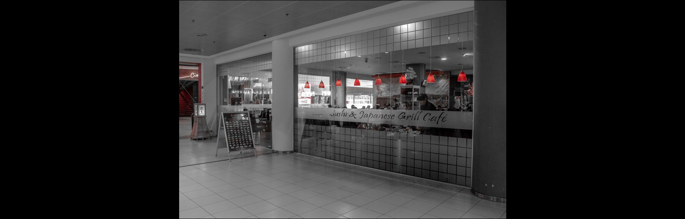

Hotspots
Culinair
Culinair | Ontspanning | Uitgaan | Sport en Cultuur
Kaiseki | Keyserlei 15, 2018 Antwerpen
Ben je op zoek naar een restaurantje waar je gezellig een avond met vrienden kan starten of een leuke date kan hebben, en heb je zin in Sushi en Grill? Dan zit je bij Kaiseki zeker goed!
Je kan onbeperkt genieten van verschillende Japanse specialiteiten. Het principe is vrij eenvoudig. Je kan onbeperkt bestellen van de menukaart en alles wordt snel en vers voor u klaargemaakt.
Deze ‘All-you-can-eat’ heeft wel enkele regeltjes. Je hebt maximaal 2 uur. Verspilling van voedsel wordt niet gewaardeerd. Restanten en ongeconsumeerde gerechten worden in rekening gebracht: voor elk Sushigerecht €1 en voor elk warm gerecht €3.Het diner (inclusief dessert) komt neer op € 25 p.p. Neem even de tijd om te genieten van de sfeer en het lekkere eten. Het zal je goed doen!

Foodmakers | Keyserlei 9, 2018 Antwerpen
Een ontbijt, lunch of brunch is natuurlijk ook altijd welkom. Daarvoor is de Foodmaker op de Keyserlei het beste plekje!Zij gebruiken uitsluitend verse en natuurlijke ingrediënten. Geen bewaarmiddelen, geen smaakstoffen en geen verdachte kleurtjes.
Lekker gezond toch?
Om die reden hebben ze dan ook een uitgebreid menu voor je klaarstaan. Het assortiment verandert constant daar ze met verse producten werken en dus zoveel mogelijk seizoensgroenten aanbieden. Gezond is het thema! Foodmaker brandt ook z’n eigen koffie -Rainforest Alliance- label dat garant staat voor een duurzame koffieproductie.
Niet alleen de koffie is speciaal! Ook alle thee is biologisch en fairtrade. Dus ben je op zoek naar een ontspannend plekje om wakker te worden of wil je gewoon genieten van een hapje en een koffie? Dan ben je bij de Foodmaker altijd welkom!